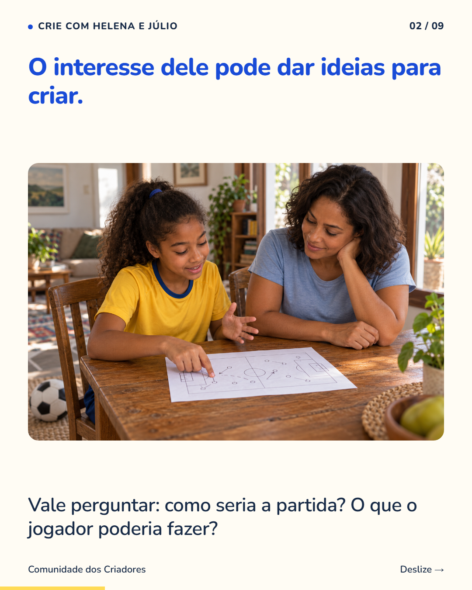
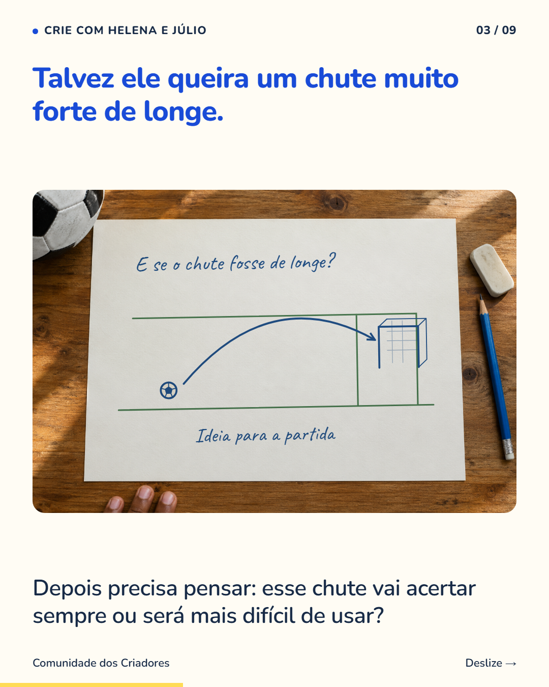
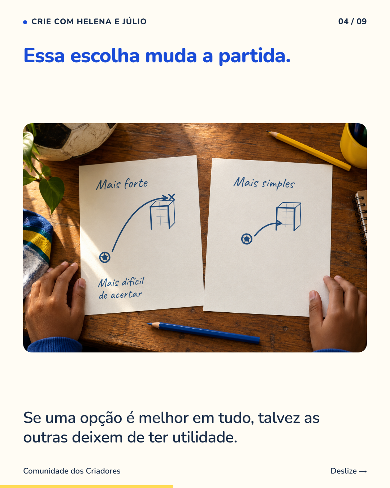
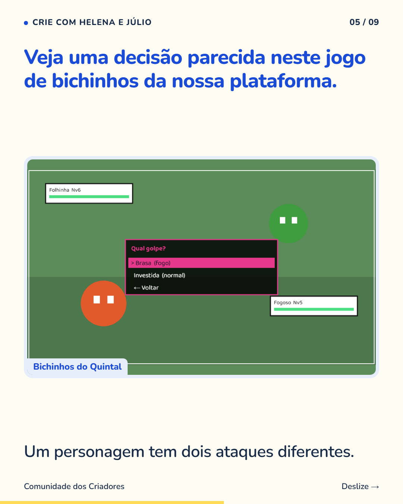
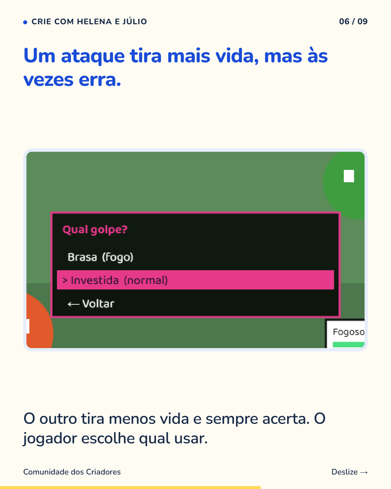
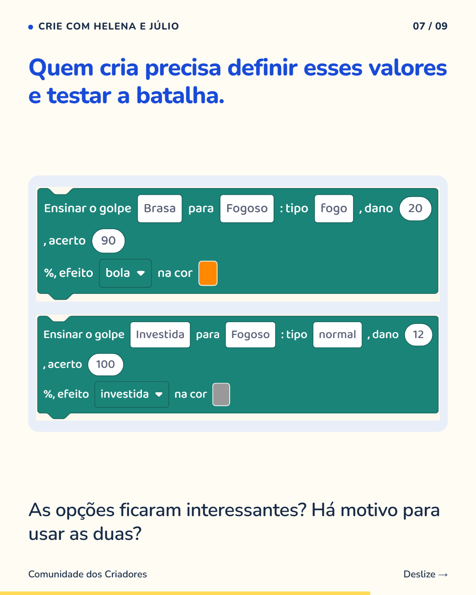
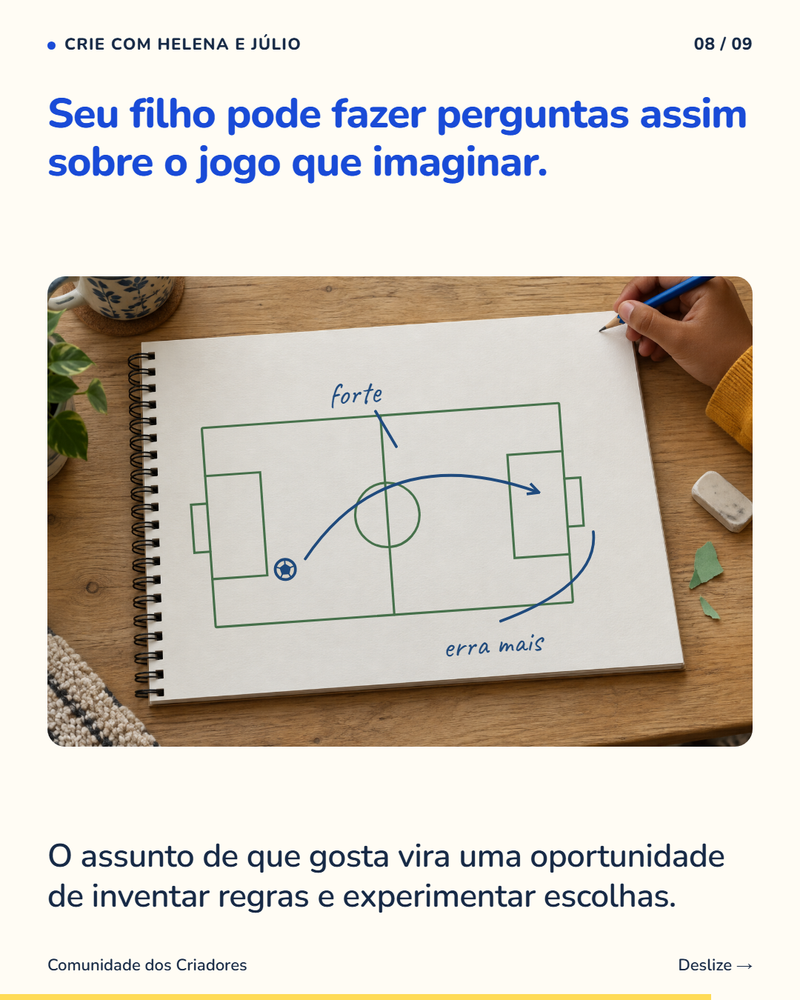
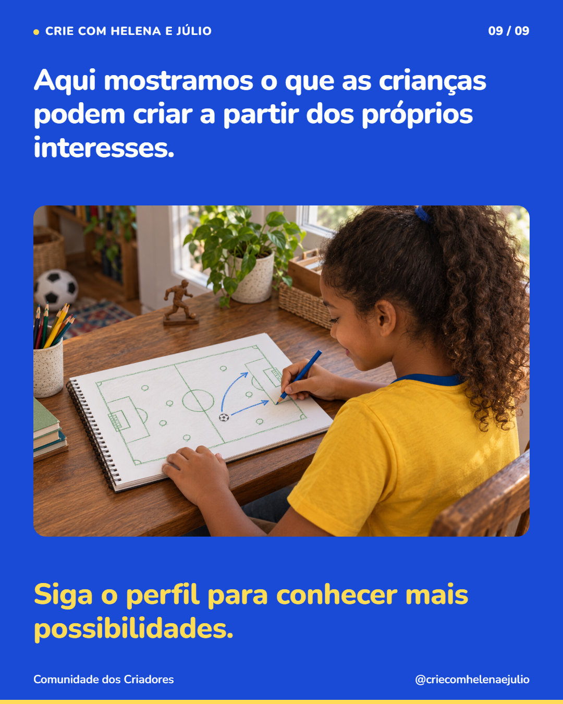

9 slides · 1080 × 1350 · Copy revisada · Interesses que viram ideias para criar jogos








Um interesse da criança pode ajudar a começar uma conversa sobre o que ela gostaria de criar. Se ela gosta de futebol, pode imaginar uma partida com regras próprias. Se prefere histórias de monstros, pode inventar personagens e ataques. Pergunte como uma escolha funcionaria para quem vai jogar. Na demonstração deste post, um ataque forte às vezes erra e outro mais fraco sempre acerta. Quem criou escolheu essa diferença para oferecer duas opções ao jogador. Seu filho pode imaginar decisões parecidas a partir de um assunto de que gosta. Siga o perfil para conhecer mais formas de aprender criando jogos.